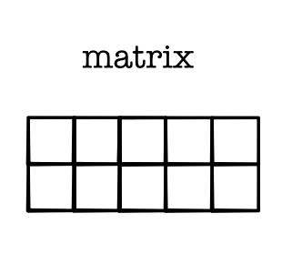
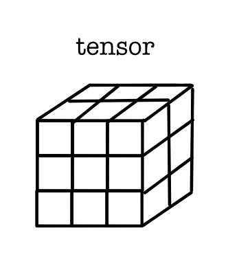
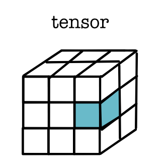
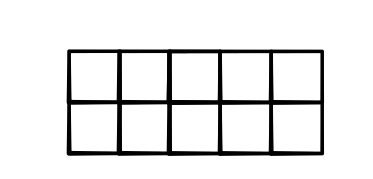
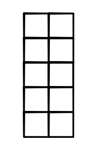
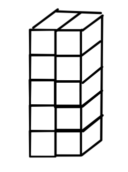
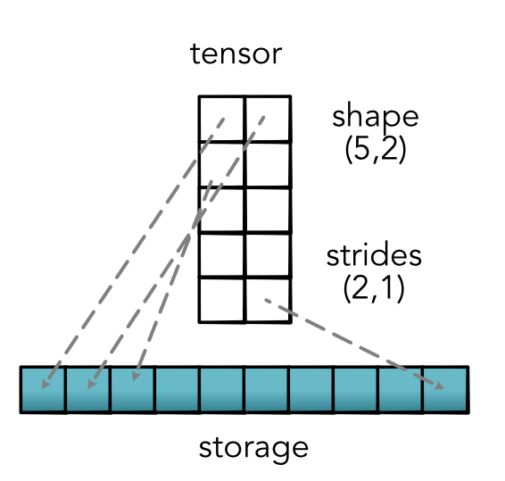
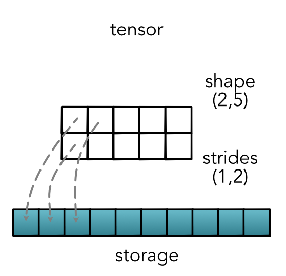

Tensors¶
Tensor is a fancy name for a simple concept. A tensor is a multi-dimensional array of arbitrary dimensions. It is a convenient and efficient way to hold data, that becomes much more powerful when paired with fast operators and autodifferentiation.
Tensor Shapes¶
So far we have focused on scalars, which correspond to 0-dimension tensors. Next is a 1-dimensional tensor (vector).

Then 2-dimensional tensors (matrix)
In addition to its dimension (dims) the other critical aspect of a tensor are its shape and size. The shape of the above vector is (5,) and its size (number of squares) is 5. The shape of the matrix is (2,5) and its size (number of squares) is 10.
A 3-dimensional tensor looks like with shape (3, 3, 2) and size (18) looks like this.
We access an element of the tensor by tensor index notation, tensor[i] for 1-dimension, tensor[i, j] for 2-dimension, tensor[i, j, k] for 3-dimension, and so forth. For example tensor[1, 2, 0] would give this blue cube.
Typically we access tensors just like multi-dimensional arrays, but there are special geometric properties that make them different.
First, tensors make it easy to change the order of the dimensions. For example, to transpose the dimensions of a matrix. For a general tensor, we will refer to this operation as permute. Calling permute will arbitrarily reorder the dimensions of the original tensor. For example, permute(1,0)
 This makes the original matrix of size (2, 5) become (5, 2). Additionally element tensor[i, j] is now accessed as tensor[j, i]
Next, tensors make it really easy to add or remove additional dimensions. We do this by noting that a matrix of size (2, 5) stores exactly the same data as a matrix of size (2, 5, 1), we can see that they are the same size.
We would like to easily increase and lower the size of our tensors without changing the data. We will do this with a view function view(5, 2, 1). Element tensor[i, j] is now tensor[i, j, 0].
Critically neither of these operations changes anything about the tensor itself. Both view and permute are tensor tricks, operations that modify how we look at the tensor, but not any of its data. Another way to say this is that they do not move or copy the data in any way, but only the external tensor wrapper.
Tensor Strides¶
Users of a Tensor library only have to be aware of the shape and
size of a tensor. However there are important implementation details
that we need to keep track of. To make our code a bit cleaner, we
will separate out the internal tensor data from the user-facing
tensor. In addition to the shape, minitorch.TensorData
manages tensor storage and strides.
Storage is where the core data of the tensor is kept. It is always a 1-D array of numbers of length size, no matter the dimensionality or shape of the tensor. Keeping a 1-D storage allows us to have tensors with different dimensionality and shape point to the same underlying data.
Strides is a tuple that provides the mapping from user indexing down to the position in the 1-D storage. Strides can get a bit confusing to think about so it is easiest to see by example.
Consider a matrix of shape (5, 2). The standard mapping is to walk left-to-right, top-to-bottom to order this matrix to the storage. We call this the contiguous mapping, since it is in the natural counting order (bigger strides left). The mapping looks like this.
{kind=link}
Here the strides are \((5, 1)\). We read this as each column moves 1 step in storage and each row moves 5 steps. We note though that we can have different strides for the same shape. If for instance, we were walking top-to-bottom, left-to-right, we would have the following stride map.
Contiguous strides are generally preferred, but non-contiguous strides can be quite useful as well. The most common case would be if we started with a contiguous (5,2) matrix above and transposed it.
{kind=link}
This yields new strides and new shape, but notably no change in the storage. This is one of the super-powers of tensors mentioned above, we can often manipulate how we view the same underlying storage.
Strides naturally extend to higher-dimensional tensors.

Finally strides can be used to implement indexing into the tensor. Assuming strides are \((s_1, s_2)\) and the user wants to lookup tensor[i, j] we can directly use strides to find the storage position:
storage[s1 * i + s2 * j]
Or in general
storage[s1 * index1 + s2 * index2 + s2 * index3 ... ]